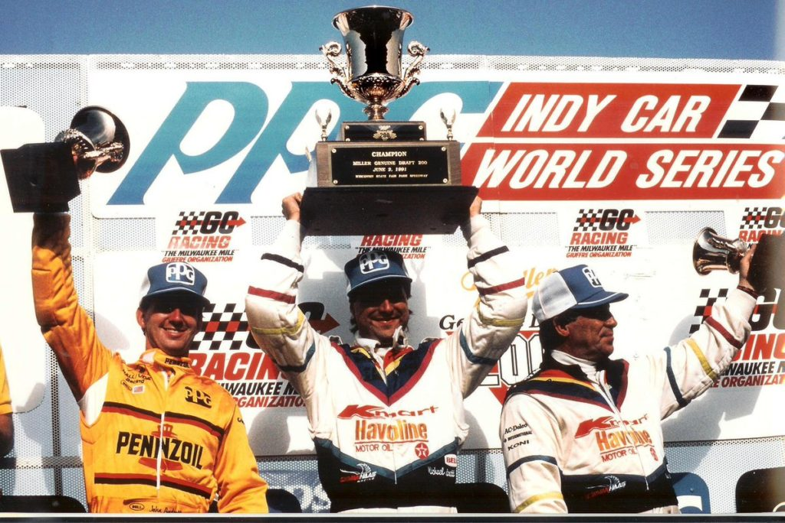

ASSUNTO DE FAMÍLIA

A trinca dos Andretti em Milwaukee ajuda a apagar as más lembranças de Indianápolis.
Por David Phillips
Vindo uma semana depois da Indy 500, Milwaukee é um marco paradoxal em cada temporada de Indycar. Sumiram as multidões de fãs e repórteres, a pressão e a rotina diária de treinar, qualificar e correr em Indianáplis. Em seu lugar está um fim de semana relativamente rotineiro de dois dias de treinamento e qualificação, seguido de uma corrida de 200 milhas na frente de talvez um décimo do número de pessoas que estavam em Indianapolis. Depois do que é conhecido em alguns círculos como o "Ano de Maio", Milwaukee representa os primeiros passos de volta à normalidade (se tal coisa pode ser dita existir) no circuito de Indycar. No entanto, tão grande é o tamanho de Indianapolis na universo da Indycar que é impossível escapar da "500" simplesmente viajando 350 milhas ao noroeste e uma semana adiante no tempo. O vencedor da Indy 500 é perseguido pelos fãs enquanto a mídia contextualiza suas histórias pré-corrida sob uma perspectiva do pós-Indy. Assim, as histórias de Indianapolis de 1991 seguiram os participantes regulares de Indycar para o venerável oval de uma milha no Wisconsin State Fair Park.
Antes mesmo da competição começar, o principal assunto paralelo do mês de maio foi revisitado durante uma reunião dos chefes de equipes da CART, na qual o tópico das mudanças nas regras dos motores desempenhou um papel de destaque. Na pista, o agora quatro vezes vencedor da Indy 500, Rick Mears, começou a trabalhar com sua eficiência habitual, conquistando sua terceira pole consecutiva da temporada com uma margem de meio segundo. No final, foi Michael Andretti que exorcizou não apenas os fantasmas de Indy 1991, mas também os de Milwaukee 1990, liderando seu primo, John, e seu pai, Mario, em um histórico 1-2-3 para a família Andretti.
Era nada menos que hora da recompensa para Michael. Uma semana antes, ele estava aparentemente a caminho de sua primeira vitória na Indy 500 quando foi atrapalhado pelo Rick & Roger Express nas voltas finais. E exatamente há um ano, Michael havia engolido talvez a derrota mais amarga de sua carreira, quando ficou sem combustível a duas voltas do final e entregou a corrida para Al Unser Jr. Foi uma vitória que ajudou a impulsionar Al para o títuloa. E esses pensamentos estavam muito na mente de Michael "Quando atravessei a linha de chegada, chamei o rádio. "É isso aí, não tem mais volta" ", ele disse.
Ironicamente, a corrida deste ano pertencia a Unser até que problemas elétricos causassem problemas na Lola Valvoline pouco antes da metade da corrida. Mas isso é apenas metade da história. Al havia passado por uma situação difícil em Milwaukee nos treinos e na qualificação, lutando para se adaptar à superfície áspera e caótica da pista (além de uma série de remendos, a pista não foi refeita desde que foi convertida de din para asfalto em 1952). "É uma consequência de Phoenix", explicou o engenheiro da Galles Kraco, John Dick. "Não temos um bom acerto para ovais curtos, e a pista irregular torna as coisas piores. Al não se sente confortável batendo sobre os buracos, então elevamos o carro e isso nos custa downforce." Sim, Unser saiu da oitava posição no grid para liderar e eventualmente vencer aqui no ano passado, mas vindo da décima posição no grid, dois segundos mais lento que o tempo de pole recorde de Mears. Seria difícil recuperar. Mas Al conseguiu em uma quantidade surpreendentemente curta de tempo. Embora tenha começado em décimo, Al logo subiu, ultrapassando Emerson Fittipaldi, Arie Luyendyk, Scott Brayton, John Andretti e Danny Sullivan em 20 voltas. Agora a menos de três segundos da liderança da Lola Kmart/Havoline de Mario, Al ultrapassou um Mears com super aquecimento saindo da curva 2. E assim, ele continuou a subir, ultrapassando Mario e liderando a corrida antes de vencer com uma vantagem de quase três segundos. Foi uma recuperação incrível por Unser, que mostrou sua habilidade de lidar com problemas e superar desafios na pista. Agora a menos de três segundos da liderança da Lola Kmart/Havoline de Mario, Al ultrapassou um Mears com sobreaquecimento saindo da curva 2 na volta 25, repetiu a manobra em Michael Andretti na volta 28, ultrapassou seu companheiro de equipe Bobby Rahal na reta principal no início da volta 31 e simplesmente passou por Mario e assumiu a liderança saindo da curva 2 alguns metros depois. O que a equipe Valvoline havia feito durante a noite? Certamente o carro estava melhor equilibrado do que antes, mas a chave foi os pneus. A Goodyear tinha um novo composto para Milwaukee, testado pelas equipes Penske e Hall em abril e algumas equipes encontraram uma queda no desempenho depois de algumas voltas.
"O carro é bom com pneus novos", disse Mears. "Mas após algumas voltas, não é tão bom quanto gostaríamos." "O problema", disse Dick, "é que eles não voltam. Uma vez que você os usa, eles estão mortos." Os pneus de Al eram tão bons que a equipe deu uma olhada neles depois da primeira parada e planejou colocar os mesmos pneus da esquerda de volta no carro na segunda parada. "Os pneus estavam trabalhando muito bem", disse ele. "Eles tendiam a se distanciar dos outros e desaceleraram, mas os meus não se distanciaram."
Mas é preciso um carro inteiro para vencer uma corrida, e desde a volta de aquecimento havia sinais de que Al podia não ter um carro para a corrida toda. Ele sentiu uma pequena falha no motor, aumentou um pouco a mistura de combustível e seguiu para a frente. Mas a falha voltou pouco antes da primeira parada de Al, e piorou. Michael Andretti reivindicou a liderança na volta 71, depois Al caiu para terceiro atrás de Mears na volta 84 e duas voltas depois ele estava nas boxes novamente. Embora a equipe tenha trocado a ignição, módulo de controle do motor, bateria e velas de ignição, nada funcionou e Al foi obrigado a desistir. Isso deixou Michael na liderança com Mears em perseguição.
Os pneus de Michael haviam desgastado no início da corrida e ele caiu para um terceiro lugar distante antes de melhorar perto metade da corrida e ultrapassar seu pai. "Eu estava brigando muito", disse Michael sobre seus problemas no início. "Estava muito escorregadio nas curvas três e quatro." Embora ele tivesse caído cerca de 12 segundos atrás de Al, um ajuste na asa durante sua primeira parada revitalizou o carro de Michael e ele logo alcançou o desacelerando Unser. No entanto, Mears também estava se recuperando. Ele também encontrou seu carro na parte solta no início da corrida, mas optou por aguardar, economizar combustível e esperar até a primeira parada para fazer uma mudança. Depois de um ajuste na asa, o Marlboro Penske de Mears seguiu Michael, que estava sendo segurado por uma luta feroz pelo terceiro lugar entre seu pai e Scott Pruett. Sim, Scott Pruett. Depois de um mês de maio terrível, o chassi Truesports saiu da carreta cedo em Milwaukee. Embora Pruett tenha se qualificado decepcionantemente em nono, ele se divertiu pilotando o carro durante todo o fim de semana. "Agora eu sei o que significa se divertir em um oval", ele exclamou emocionado no sábado. "Posso correr alto, baixo, em qualquer lugar da pista e ele adere." De fato, ele aderiu e, depois de um começo bem abaixo, Pruett guiou inteligentemente pela pista. Depois de ultrapassar Mario na saída da curva quatro, ele deixou o mais velho Andretti com uma boa distância apenas para ficar parado em sua segunda parada nos boxes. Depois de perder algumas voltas, Pruett provocou uma amarela batendo na frente do carro de Brayton. Ele voltou a recuperou uma volta em relação a Michael, até o motor Judd V8 dar problema na volta 160.
E assim, com uma vantagem de uma volta sobre John, Michael Andretti venceu a Miller Genuine Draft 200, exorcizando os fantasmas e liderando sua família para um histórico 1-2-3 na corrida. A vitória também foi uma forma de vingança para Michael, que havia sido superado na Indy 500 uma semana antes e perdido a corrida no ano anterior devido a problemas com combustível. Enquanto isso, o problema elétrico no carro de Rick Mears o impediu de completar a corrida e o colocou em uma posição desfavorável na tabela de classificação. A bandeira amarela devido ao motor estourado de Pruett permitiu que John se aproximasse descontar uma volta, o que ele conseguiu na volta 189, mas Michael não deixaria Milwaukee escapar de novo. "Depois do ano passado, eu queria ter certeza de que estávamos à com sobras (quantidade de combustível)", disse Michael. "Estávamos acima de 1,8 milhas por galão e então essa última bandeira amarela nos deu certeza que sim. Eu tentei ficar à frente de John e então, quando eu vi que só havia cerca de 10 voltas para o fim, eu deixei ele ir pela linha de dentro... "Ele não me deu nada", rebateu John. "Se isso é deixar eu ter a linha, eu não quero ver como é correr contra ele."
Contrariamente ao seu filho, Mario foi prejudicado pela quilometragem marginal de combustível, mas ainda assim chegou em casa uma volta à frente do líder do campeonato Bobby Rahal. Outra volta atrás ficou Danny Sullivan, que largou em quarto lugar na Lola-Alfa. Em um dia histórico para os Andretti, e embora terceiro melhor na pista, o patriarca da família, Mario, expressou sua felicidade com a conquista histórica. “Como poderíamos estar mais felizes? Não poderia ser melhor do que isso. Bem, sim, poderia, as posições no pódio poderiam ter sido invertidas. Eu vou te dizer, essas crianças... não têm respeito.” A seguir vem uma série de corridas de rua, que devem mostrar a verdadeira forma da temporada de 1991, que produziu cinco vencedores em cinco corridas e tem seis pilotos separados por 20 pontos, uma vitória da liderança do campeonato.
| POS | PILOTO | EQUIPE | PONTOS |
|---|---|---|---|
| 1 | Michael Andretti | Newman-Haas Racing | 21 |
| 2 | John Andretti | Hall-VDS Racing | 16 |
| 3 | Mario Andretti | Newman-Haas Racing | 14 |
| 4 | Bobby Rahal | Galles-Kraco Racing | 12 |
| 5 | Danny Sullivan | Patrick Racing | 10 |
| 6 | Scott Brayton | Dick Simon Racing | 8 |
| 7 | Eddie Cheever | Chip Ganassi Racing Team | 6 |
| 8 | Emerson Fittipaldi | Marlboro Team Penske | 5 |
| 9 | Scott Goodyear | Uno Racing | 4 |
| 10 | Hiro Matsushita | Dick Simon Racing | 3 |
| 11 | Jeff Andretti | Bayside Motorsports | 2 |
| 12 | Tony Bettenhausen Jr. | Bettenhausen Motorsports | 1 |
| 13 | Scott Pruett | Truesports | 0 |
| 14 | Pancho Carter | Arciero Racing | 0 |
| 15 | Rick Mears | Marlboro Team Penske | 1 |
| 16 | AJ Foyt Jr. | Gilmore Racing Team | 0 |
| 17 | Arie Luyendyk | Vince Granatelli Racing | 0 |
| 18 | Michael Groff | Euromotorsport | 0 |
| 19 | Al Unser Jr. | Galles-Kraco Racing | 0 |
| 20 | Johnny Parsons Jr. | Leader Card Racers | 0 |
| 21 | Dale Coyne | Dale Coyne Racing | 0 |
| Pos. | Piloto | Pontos | Largadas | Poles | Vitórias | Pódios |
|---|---|---|---|---|---|---|
| 1 | Bobby Rahal | 60 | 5 | 0 | 0 | 3 |
| 2 | Rick Mears | 59 | 5 | 3 | 1 | 2 |
| 3 | Michael Andretti | 52 | 5 | 2 | 1 | 2 |
| 4 | Arie Luyendyk | 49 | 5 | 0 | 1 | 2 |
| 5 | John Andretti | 48 | 5 | 0 | 1 | 2 |
| 6 | Al Unser, Jr. | 42 | 5 | 0 | 1 | 1 |
| 7 | Danny Sullivan | 33 | 5 | 0 | 0 | 0 |
| 8 | Eddie Cheever | 25 | 5 | 0 | 0 | 1 |
| 9 | Mario Andretti | 24 | 5 | 0 | 0 | 1 |
| 10 | Emerson Fittipaldi | 21 | 5 | 0 | 0 | 1 |
| 11 | Scott Brayton | 21 | 5 | 0 | 0 | 0 |
| 12 | Jeff Andretti | 15 | 5 | 0 | 0 | 0 |
| 13 | Scott Pruett | 12 | 5 | 0 | 0 | 0 |
| 14 | Scott Goodyear | 10 | 5 | 0 | 0 | 0 |
| 15 | Tony Bettenhausen, Jr. | 9 | 5 | 0 | 0 | 0 |
| 16 | Gordon Johncock | 8 | 1 | 0 | 0 | 0 |
| 17 | Ted Prappas | 8 | 2 | 0 | 0 | 0 |
| 18 | Stan Fox | 5 | 1 | 0 | 0 | 0 |
| 19 | Mike Groff | 5 | 5 | 0 | 0 | 0 |
| 20 | Didier Theys | 3 | 1 | 0 | 0 | 0 |
| 21 | Hiro Matsushita | 3 | 5 | 0 | 0 | 0 |
| 22 | Franco Scapini | 2 | 1 | 0 | 0 | 0 |
| 23 | Dean Hall | 1 | 1 | 0 | 0 | 0 |
| 24 | Dominic Dobson | 0 | 1 | 0 | 0 | 0 |
| 25 | Randy Lewis | 0 | 4 | 0 | 0 | 0 |